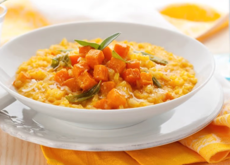

Salmon & Butternut Squash Risotto

Tasty enough for adults and easy for babies too...
Ingredients
- 1 tbsp olive oil
- 1 small onion, finely chopped
- Garlic (1x clove), crushed
- 200g Arborio risotto rice
- 250g butternut squash (and peeled), cubed
- 1l vegetable stock (hot)
- 300g skinless salmon fillet, cubed
- 100g frozen peas
- 2 tbsp fromage frais
- 3 tbsp mild cheddar cheese, grated
Steps
- Preheat the oven to 180'C/Fan 160'C/Gas mark 4
- Heat the olive oil in a 1.5 litre ovenproof casserole dish and gently fry the onion and garlic for a few minutes, until soft
- Stir in the rice and cook for a further minute then add the butternut squash and toss with the rice and onions
- Pour over the stock and cover with either a tight-fitting lid or foil
- Bake in the oven for 20 minutes
- Remove from the oven and stir through the salmon and peas then put back into the oven, covered, for a further 5 minutes or until the salmon is cooked
Take Me Home